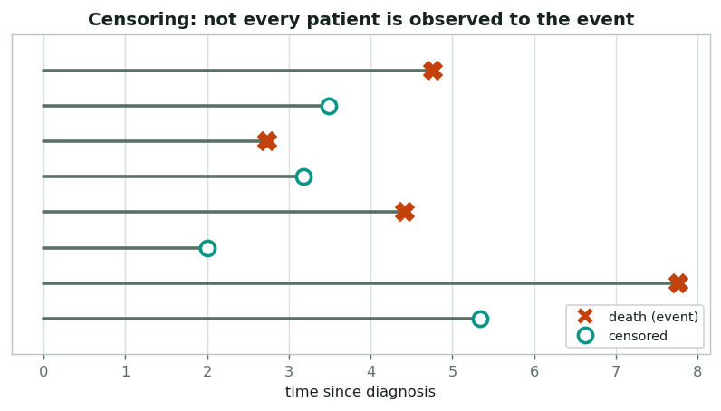
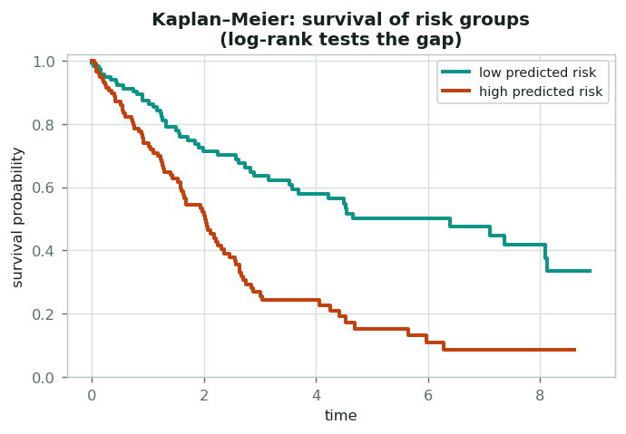
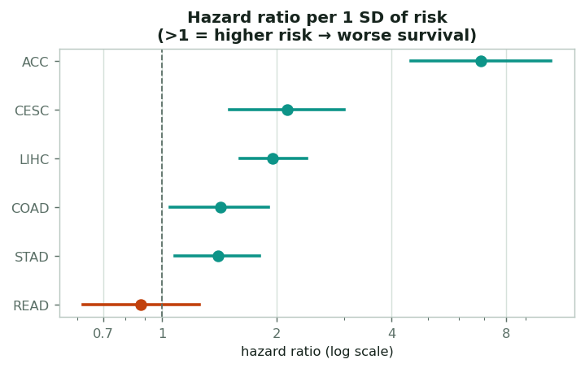
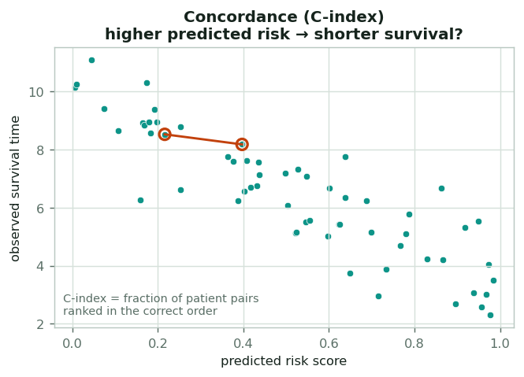
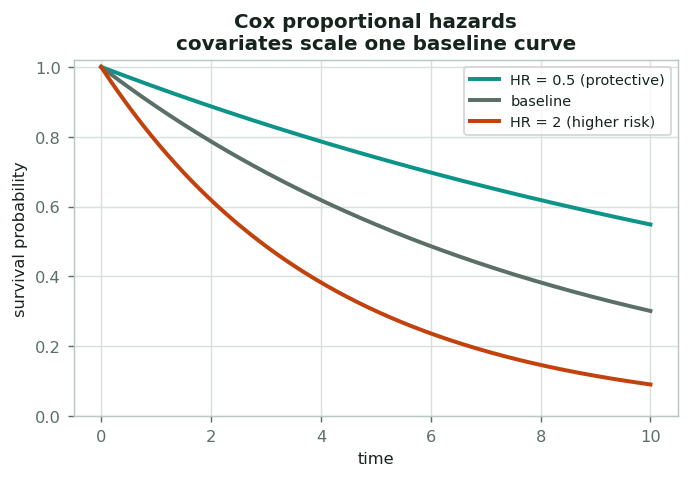
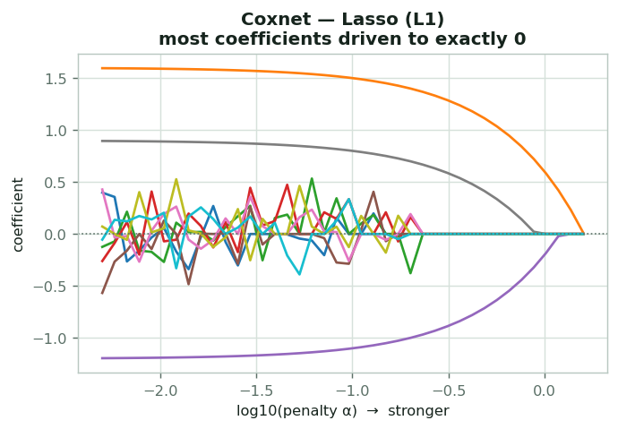
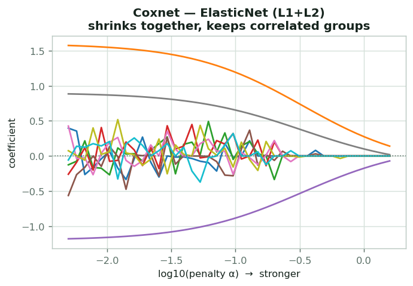
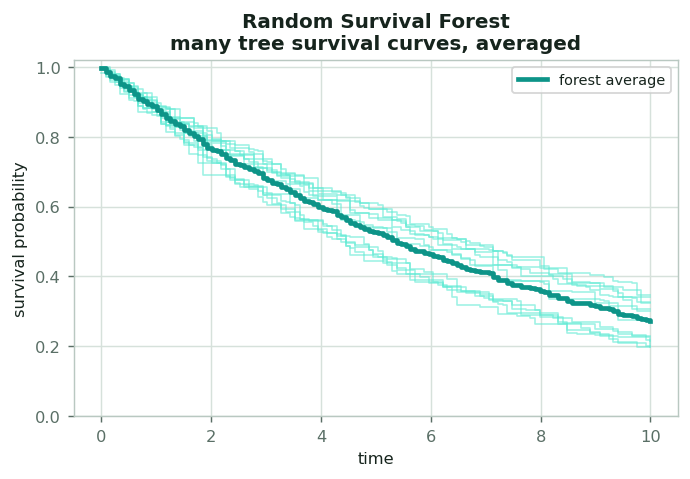
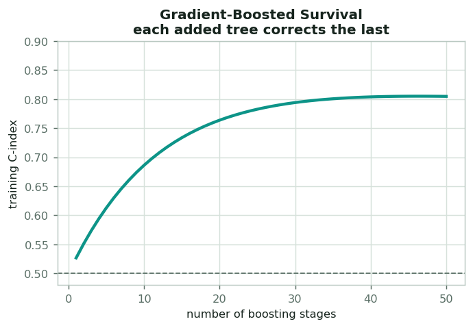
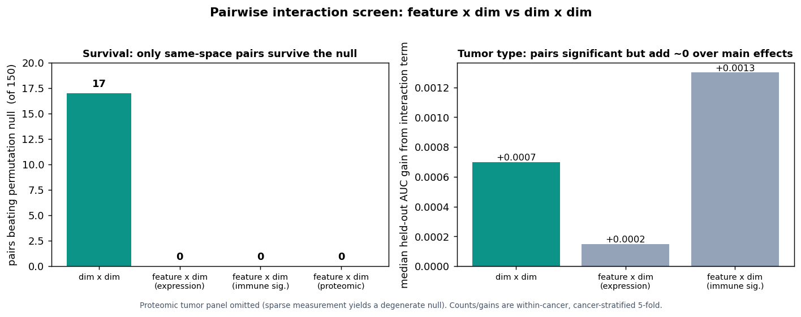

Survival models, explained
Survival analysis asks a harder question than classification: not just which group a patient is in, but how long until an event (here, death), while handling patients we stop observing before that event. This page builds up the core ideas, then walks through every survival model the project uses.
The building blocks
Why survival needs its own toolkit
For many patients we never observe the event: the study ends, or they're lost to follow-up, while still alive. Their survival time is censored: we only know they lived at least that long. You can't just throw these patients away (that biases everything), and you can't treat "alive at last visit" as "lived exactly that long." Every survival method below is built to use censored and complete observations correctly.


Drawing and comparing survival curves
A Kaplan–Meier curve estimates the probability of surviving past each time point, stepping down at each death and correctly accounting for censored patients. To ask "do two groups differ?", we split patients (e.g. high vs low predicted risk at the median) and run a log-rank test; its p-value asks whether the two curves are farther apart than chance would produce. This is the project's standard "does the model separate patients into clinically distinct groups?" check.
How strong is the effect?
The hazard is the instantaneous risk of the event at a moment (in plain terms, the momentary risk of dying right now), given survival up to then. A hazard ratio (HR) compares that risk between conditions: HR = 2 means twice the instantaneous risk. The project reports HR per one standard deviation of the model's risk score, so the strength of the continuous association is comparable across cancers (e.g. ACC's HR ≈ 6.9 is enormous; an HR below 1 means the score is protective / anti-predictive).


The main score: did we rank patients correctly?
The concordance index is survival's analogue of AUC. Take every pair of patients whose order we can judge, and ask: did the model give the higher risk score to the one who died sooner? The C-index is the fraction ranked correctly: 0.5 is chance, 1.0 is perfect. It naturally handles censoring by only comparing pairs whose ordering is known. Every result on this site is a C-index.
The survival models
All five are fit on PCA-reduced WSI features (95% variance, refit inside every fold). The clinical baseline and combined model also fold in age + sex.
Cox proportional hazards
In plain terms. Think of one shared survival curve for everyone, and each patient gets a personal dial that scales their risk up or down. Older or sicker patients turn the dial one way; the curve's shape stays the same for all of them.
What it does. The classic survival model. It assumes every covariate multiplies a single shared baseline hazard by a constant factor (the "proportional hazards" assumption: everyone's risk rises and falls together, so one patient's curve is just a scaled copy of another's), so a patient's covariates scale one underlying survival curve up or down.
How it works. It estimates a weight per covariate; the weighted sum is
the log-hazard (the risk score on a logarithmic scale), and exp(weight) is
that covariate's hazard ratio. It never has to model the baseline curve's shape, which
makes it efficient on small data.
Why it's here. With only age + gender it's the project's
clinical-only floor (Cox_AgeSex): the bar every WSI model
must beat to prove imaging adds value.

Coxnet Lasso (L1)

In plain terms. Imagine a strict editor who deletes every word that isn't pulling its weight, keeping only the few features that actually predict survival. Lasso does the same to the model's inputs.
What it does. A Cox model with an L1 penalty (a cost on the sum of the coefficients' sizes that pushes weak ones all the way to zero). With thousands of WSI features and few patients, a plain Cox would overfit instantly. Lasso adds a cost on coefficient size that forces most weights to exactly zero.
How it works. It fits a whole path of solutions from "very sparse" to "less sparse" as the penalty α shrinks, automatically performing feature selection, keeping only the handful of features that carry survival signal.
Why it's here. It's the project's workhorse WSI model: the best per-cancer model for most cancers (CESC, COAD, STAD, …) and the pooled pan-cancer model, because sparsity is exactly what tiny high-dimensional cohorts need.
Coxnet ElasticNet (L1 + L2)
In plain terms. It's a gentler editor than Lasso. Instead of cutting a redundant feature outright, it lets a whole team of related features stay and share the credit, so nothing useful gets thrown out by accident.
What it does. A blend of L1 (Lasso) and L2 (Ridge) penalties. The L2 penalty is a cost on the squared size of the coefficients that shrinks them gently toward zero without forcing any to vanish. It still encourages sparsity, but the L2 part lets groups of correlated features survive together instead of arbitrarily keeping one and dropping the rest.
How it works. The l1_ratio dials between pure Lasso (1.0)
and pure Ridge (0.0); at 0.5 it shares the work. Correlated WSI features (very common
in embeddings) are shrunk smoothly rather than fought over.
Why it's here. It's the WSI half of the combined model
(Cox_WSI_plus_Clin), and a robust alternative when Lasso's hard selection is
too aggressive on correlated imaging features.

Random Survival Forest (RSF)

In plain terms. Ask hundreds of slightly different "20 questions" experts to sort patients by how long they tend to live, then average all their answers. No single expert is trusted too much, so the crowd's verdict is steadier than any one of them.
What it does. A random forest adapted to survival. Each tree splits patients into ever-more-similar survival groups, and each leaf stores a Kaplan–Meier curve. A patient's prediction is the average curve across all trees.
How it works. Trees are grown on bootstrap samples (each tree sees a random resample of the patients) using random feature subsets and a survival splitting rule (the log-rank statistic). Averaging many noisy trees yields a smooth, non-linear risk estimate, with no proportional-hazards assumption required, so risks are free to rise and fall in more complex patterns than a straight-line Cox model allows.
Why it's here. It can capture interactions a linear Cox can't, but on tiny cohorts it overfits easily. It's the model whose old "0.71 ± 0.22" on CHOL turned out to be noise under honest CV, a cautionary example the project keeps on display.
Gradient-Boosted Survival
In plain terms. Build the prediction one small correction at a time: each new little tree focuses only on the patients the previous trees got wrong, like a student reviewing just the questions they missed until the whole picture sharpens.
What it does. Builds an ensemble sequentially: each new shallow tree is fit to correct the errors of the trees so far, gradually improving the risk prediction.
How it works. Using a Cox-style loss, it takes many small additive steps (learning rate 0.1) with depth-2 "stumps". This can model subtle non-linear structure, but more stages means more chance to overfit small data.
Why it's here. It rounds out the comparison with a second non-linear approach, so each cancer's result reflects the best of linear and non-linear models rather than a single arbitrary choice.

Do pairs of signals beat single ones?
Every model above leans mostly on each variable on its own. A natural worry: are we missing interactions — cases where two signals only matter together? And in particular, is the strongest pair a molecular feature paired with a histology dimension (cross-modality), rather than two histology dimensions (same-space)? We screened every pair for joint prediction, calibrated each against a family-wise permutation null (the largest correlation you'd see by chance across all pairs tested), and then asked whether the top pairs actually add over the two single effects on held-out folds — all within-cancer, cancer-stratified.
The answer is no, on both counts. For survival, only same-space dimension×dimension pairs produce any interactions that clear the null at all (17 of 150); every cross-modality feature×dimension source — transcriptomic, immune, proteomic — produces zero. So the hypothesis that a feature-paired-with-dimension is the strongest interaction is not supported: those pairs screen no stronger than dimension pairs, and weaker by the only criterion that survives multiple testing. For tumor type, the screen lights up everywhere (pairs are easy to find when the signal is already near-saturated), but adding the interaction term moves held-out AUC by a rounding error — a median of a few ten-thousandths.

We checked this three ways, and they all agree. (1) The pairwise screen above — individual interactions don't survive a permutation null. (2) An explicit test: we added every pairwise product of the top principal components to a penalized Cox model and swept the count from 45 up to 3,160 interaction terms; they never beat the main-effects model on held-out concordance, and beyond a couple hundred they hurt it (the extra terms overfit). (3) The tree models on this page — Random Survival Forest and Gradient Boosting — capture interactions automatically, and they don't beat the linear models either. Three independent angles, one conclusion: for survival, the signal these embeddings carry is additive.